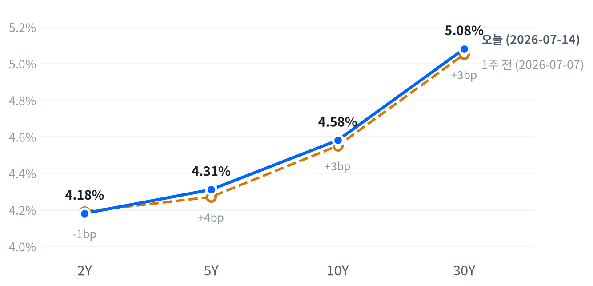

6월 CPI(-0.42% MoM)·PPI(-0.28% MoM)가 나란히 예상보다 큰 폭으로 식으며 연준 추가 긴축 우려가 완화 — 국채금리 하락과 함께 나스닥(+0.62%)·S&P500이 동반 상승했지만, 메모리·AI 광통신주는 차익실현 매물에 급락하며 종목별 온도차가 뚜렷했다.
동인 — 이날 시장의 단일 동인은 6월 PPI(-0.28% MoM, 컨센서스 0.0%)와 전일 발표된 6월 CPI(-0.42% MoM, 컨센서스 -0.1%)가 나란히 컨센서스를 크게 하회한 디스인플레이션 서프라이즈다. 두 지표 모두 이스라엘-이란 전쟁 확산에 따른 에너지발 인플레이션 우려가 실제 데이터로는 아직 반영되지 않았음을 보여주며, 이는 "전쟁이 우려만큼 인플레이션적이지 않다"는 안도 랠리로 이어졌다.
다만 Fed 이사 케빈 워시가 이번 CPI 둔화에 만족하지 않는다는 매파적 발언을 내며 균형추 역할을 했고, CME FedWatch 상 7/29 FOMC 동결 확률이 87.7%까지 급등(직전 대비 인상 베팅이 40%대에서 10%대로 급락)한 점은 시장이 이미 상당 부분 되돌림을 가격에 반영했음을 시사한다.
크로스에셋 정합성 — 국채금리 하락(2Y~30Y 전 구간 전일비 하락)·달러 약세(DXY -0.44%)·주식 상승·금 상승이 동시에 나타난 조합은 디스인플레이션 내러티브와 방향성이 일치해 크로스에셋 간 정합성은 높은 편이다.
다만 반도체·메모리·AI 광통신주가 동반 하락한 것은 매크로 내러티브와는 별개의 종목 고유 요인(밸류에이션 부담에 따른 차익실현)으로, 매크로 트레이드와 마이크로 트레이드가 같은 날 반대 방향으로 움직인 흔치 않은 조합이다. 전력 인프라주(GE Vernova -1.01%, Vertiv +0.33%)의 낙폭이 반도체·광학 대비 훨씬 제한적이었다는 점은 이번 조정이 AI 밸류체인 전반이 아니라 반도체·광학 부품 쪽에 국한된 표적성 리스크오프였음을 뒷받침한다.
다음 촉매 — 단기적으로는 실적 시즌 본격화(메가캡·반도체 기업 가이던스)가 이번 반도체·메모리 조정이 펀더멘털 훼손인지 단순 차익실현인지를 가를 핵심 변수다.
매크로 쪽에서는 9월 FOMC를 둘러싼 인상(약 53%) vs 동결(약 40%) 확률이 팽팽한 만큼, 다음 CPI·PPI 발표와 NY연은·미시간대 기대인플레이션 지표가 추가로 상승세를 이어가는지가 채권시장의 방향을 결정할 것이다. 기대인플레이션이 계속 오르면서도 실제 CPI가 둔화되는 디커플링이 이어질 경우, 연준의 커뮤니케이션 리스크(매파 발언 vs 데이터 디펜던스)가 변동성 확대 요인으로 부상할 수 있다.
| 지수 (등락률 순) | 종가 | %등락 |
|---|---|---|
| Nasdaq | 26,269.23 | +0.62% |
| S&P 500 Growth | 138.56 | +0.49% |
| Russell 2000 | 2,976.26 | +0.39% |
| S&P 500 | 7,572.40 | +0.38% |
| Dow | 52,658.64 | +0.29% |
| S&P 500 Value | 230.25 | +0.13% |
| 섹터 (등락률 순) | 종가 | %등락 |
|---|---|---|
| Communication Svcs | 113.38 | +1.73% |
| Consumer Disc. | 117.00 | +0.95% |
| Financials | 56.56 | +0.68% |
| Consumer Staples | 83.47 | +0.06% |
| Health Care | 158.29 | 0.00% |
| Industrials | 180.06 | -0.22% |
| Materials | 50.50 | -0.28% |
| Energy | 56.50 | -0.79% |
| Utilities | 45.22 | -1.03% |
| Technology | 181.58 | -1.11% |
나스닥은 개장가(26,261) 대비 오전 10시에 26,315(+0.21%)까지 오르며 상승 출발했지만, 정오 12시30분에는 26,045(개장가 대비 -0.82%)까지 반납하는 뚜렷한 V자형 궤적을 그렸다. S&P500(고점 10시 +0.13% → 저점 12시30분 -0.59%)과 러셀2000(저점 동일하게 12시30분 -0.30%, 다만 고점은 11시 +0.58%로 한 시간 늦게 형성)도 같은 정오 저점을 공유했다. 장중 매물이 특정 종목군에 그치지 않고 시장 전반으로 번진 리스크오프였던 셈이다.
이 정오 스윙의 진원지는 개별 종목 단에서 더 극적으로 나타나는데, 엔비디아는 개장 직후 09시30분 고점(213.81, +0.85%) 이후 정오 무렵 206.04(-2.82%)까지 급락했다가 마감 시 212.49(+0.33%)로 완전히 되돌리는 대형 스윙을 연출했다. 이는 메모리·광통신 차익실현 매물이 반도체 전반에 전이되었다가 오후 들어 메가캡 매수세가 되돌린 로테이션 타이밍과 정확히 겹친다.
실제로 애플(+4.01%, 사상 최고가)·알파벳(+3.17%)·메타(+3.07%)·아마존(+3.02%)·마이크로소프트(+2.78%) 등 메가캡 플랫폼주 강세가 커뮤니케이션서비스(+1.73%)·임의소비재(+0.95%) 섹터를 지수 상단으로 밀어올린 반면, 정작 테크 섹터(XLK)는 마이크론 등 반도체·메모리 급락 여파로 -1.11%를 기록해 지수와 반대로 움직였다. 즉 이날은 '지수는 오르고 반도체 섹터는 빠지는' 전형적 순환매 장세였다.
전략 해석지수 상승의 실제 동력은 폭넓은 매수세라기보다 애플·알파벳·메타 등 소수 메가캡의 랠리에 쏠려 있어, S&P500 동일가중 지수나 러셀2000 대비 초과폭이 크지 않은 점을 감안하면 시장 폭(breadth)은 헤드라인만큼 강하지 않다고 봐야 한다.
Growth(+0.49%)가 Value(+0.13%)를 앞서고 채권금리가 동반 하락한 조합은 전형적인 디스인플레이션 트레이드지만, 정작 반도체·메모리가 그 트레이드에서 소외됐다는 점이 이례적이다 — 이는 밸류에이션 부담이 큰 종목군에서 먼저 차익실현이 나온 결과로, 실적 시즌 진입을 앞두고 포지셔닝을 가볍게 하려는 수급 성격이 강하다.
트레이딩 관점에서는 나스닥 26,045(정오 저점) 이탈 여부를 단기 지지선으로 체크하고, 반도체 섹터의 추가 하락이 메가캡까지 전이되는지를 다음 세션 확인 트리거로 둔다.
| 만기 | 수익률 (7/14) | 전일 대비 | 1주 전 (7/7) | 주간 변화 |
|---|---|---|---|---|
| 2Y | 4.18% | -8.0bp | 4.19% | -1bp |
| 5Y | 4.31% | -6.0bp | 4.27% | +4bp |
| 10Y | 4.58% | -4.0bp | 4.55% | +3bp |
| 30Y | 5.08% | -2.0bp | 5.05% | +3bp |

주간 변화: 2Y -1bp · 5Y +4bp · 10Y +3bp · 30Y +3bp — 단기만 내리고 벨리·장기가 오른 완만한 베어 스티프닝 (자료: FRED)
주간 커브 변화 — 최근 1거래일(7/14)은 2Y가 -8bp로 가장 크게 내리며 만기 전 구간에서 금리가 하락한 '불 스티프닝'(강세+커브 스티프닝)이었던 반면, 1주일 단위로 보면 2Y만 -1bp 소폭 하락하고 5Y·10Y·30Y는 각각 +4bp·+3bp·+3bp 상승해 '베어 스티프닝' 흐름이 우세했다. 2s10s 스프레드는 1주 전 36bp에서 현재 40bp로 4bp 확대됐다.
해석 — 커브 형태 & 듀레이션 전략 — 7월14일 하루치 랠리만 보면 단기물이 더 크게 강해진 불 스티프닝이지만, 이는 전날 발표된 CPI 서프라이즈(-0.42% MoM)에 대한 즉각적 반응이며 주간 추세와는 결이 다르다.
한 주 전체로는 오히려 장기물 금리가 소폭 올라 2s10s 스프레드가 36bp에서 40bp로 벌어진 베어 스티프닝이 진행 중이었다 — 즉 연준의 향후 인상 사이클 지속 우려가 완전히 걷힌 것은 아니고, 장기 기대인플레이션(미시간대 1년 기대 4.8%, NY연은 1년 기대 3.7%로 상승)과 재정 리스크 프리미엄이 장기물 금리 하단을 지지하고 있다는 신호로 읽힌다.
포지셔닝 측면에서는 단기물 위주 듀레이션 확대(2Y·5Y 비중 확대)는 CPI 서프라이즈 지속 시 유효하나, 30Y 롱 포지션은 기대인플레 재상승 리스크에 취약해 커브 스티프너(2s30s 매수) 형태로 헤지하는 전략이 합리적이다. 손절 트리거는 10Y가 4.65% 위로 재상승하며 베어 스티프닝이 재개될 경우로 설정한다.
| 통화 | 수준 | %등락 |
|---|---|---|
| DXY | 100.50 | -0.44% |
| USD/KRW | 1,486.47 | -0.75% |
| USD/JPY | 162.09 | -0.21% |
| EUR/USD | 1.1471 | +0.76% |
달러인덱스(DXY)는 CPI·PPI 서프라이즈로 연준 긴축 경로 기대가 후퇴하며 -0.44% 약세, 유로가 +0.76%로 가장 강한 반면 원화도 달러 대비 1,486원대로 0.75% 절상됐다.
엔화는 장중 오전 11시 162.42엔(개장가 대비 +0.12%)까지 약세를 보이다 저녁 19시 161.89엔(-0.21%)까지 완만하게 되돌리며 하루 종일 좁은 밴드 안에서 달러 약세 흐름에 동조했다.
달러 약세·엔 강세·원화 강세가 동시에 나타난 조합은 전형적인 미 금리 하락발 달러 매도 패턴으로, 캐리트레이드 청산보다는 금리차 축소 기대에 따른 포지션 조정 성격이 짙다.
| 품목 | 가격 | %등락 |
|---|---|---|
| WTI | $80.25 | +1.15% |
| Brent | $85.37 | +0.76% |
| Natural Gas | $2.913 | +0.31% |
| Gold | $4,069.30 | +0.20% |
최대 변동은 WTI(+1.15%)로, 장중 흐름을 보면 새벽 4시(개장 전 아시아 시간대)에 $80.93(개장가 대비 +1.23%)까지 오르며 이란-이스라엘 전쟁발 공급 우려를 반영했으나, 오전 11시30분에는 $78.19(-2.20%)까지 낙폭을 키우는 큰 폭의 되돌림을 겪은 뒤 오후 들어 다시 반등해 $80.22로 마감했다. 이 되돌림 폭(장중 고점 대비 저점까지 약 3.4%p)만 봐도, 유가는 여전히 지정학 프리미엄과 수급 펀더멘털 사이에서 롤러코스터를 타고 있다.
금은 새벽 4시 저점($4,023.30, -0.34%) 이후 CPI·PPI 발표 뒤 국채금리가 하락하자 오후 2시30분 고점($4,089.10, +1.29%)까지 꾸준히 오르는 우상향 궤적을 그렸고, 이후 소폭 반납해 +0.20% 마감 — 안전자산 수요보다는 실질금리 하락에 연동된 되돌림 성격이 짙다.
| 자산군 | 판단 | 전략 근거 |
|---|---|---|
| 주식 | 중립~비중확대(메가캡 선별) | 디스인플레이션 서프라이즈로 밸류에이션 부담 완화되나 시장 폭이 좁아 지수 추종보다 메가캡·커뮤니케이션서비스 선별 대응 선호 |
| 채권 | 단기물 중심 듀레이션 확대 | 2Y 중심 불 스티프닝은 유효하나 장기물은 기대인플레 재상승 리스크에 노출 — 2s30s 스티프너로 헤지 |
| FX | 달러 약세 베팅 축소, 관망 | DXY 약세는 금리 하락에 연동된 것으로 방향성은 유효하나 FedWatch 동결 확률 급등이 이미 상당폭 반영돼 추가 하락 여력 제한적 |
| 원자재 | WTI 저가 매수보다 레인지 트레이딩 | 지정학 프리미엄과 수급 펀더멘털 사이 큰 변동성(장중 3%p대 되돌림) — 방향성 베팅보다 레인지 안에서 대응 |
| 메모리 | 단기 차익실현 이후 저점 매수 관찰 | Micron·WDC·Seagate 급락은 개별 악재가 아닌 YTD 급등(Micron +244%, SanDisk +640%) 이후 되돌림 — 펀더멘털 훼손 신호는 없어 반등 시점 관찰 |
| AI 인프라 | 광학(Optics) 비중 축소, 전력 인프라 유지 | Lumentum·Coherent·Marvell 등 광통신 밸류체인은 표적 리스크오프로 조정폭 크나, GE Vernova·Vertiv 등 전력 인프라는 전이 제한적 — 상대적으로 견조 |
리스크 시나리오 1 — Fed 매파 발언(Warsh)이 확산되며 9월 FOMC 인상 확률이 재차 50%를 상회, 국채금리가 반등해 이번 주 랠리를 되돌리는 시나리오. 트리거는 10Y 4.65% 이상 재상승.
리스크 시나리오 2 — 메모리·AI 광학 조정이 차익실현을 넘어 실적 시즌 가이던스 하향으로 확인될 경우, 반도체 섹터 전반으로 매물이 확산되며 메가캡 랠리로 상쇄되지 않는 지수 조정이 발생할 수 있다. 확인 트리거는 다음 주 반도체 대형주 실적 가이던스.
이날 미국 상장 메모리주 급락과 반대로 코스피 원주가 급등, 미·한 메모리주 간 디커플링이 두드러졌다. 다만 코스피 원주 급등에 대한 이날자 단독 촉매 보도는 확인되지 않아 원인은 추정 단계에 머문다.
24/7 Wall St. 등 복수 매체는 이날 하락을 특정 악재가 아닌 2026년 YTD 급등(Micron +244%, SanDisk +640%)에 대한 차익실현으로 해석했다.
아이폰 생성형 AI 기능의 중국 출시 승인 보도가 촉매로 지목되며 메가캡 랠리를 주도, 커뮤니케이션서비스·임의소비재 섹터 강세로 연결됐다.
| 종목 | 종가 | %등락 |
|---|---|---|
| SK hynix (000660.KS) | ₩2,082,000 | +8.83% |
| Samsung Elec (005930.KS) | ₩279,500 | +6.27% |
| Nvidia (NVDA) | $212.50 | +0.33% |
| Seagate (STX) | $828.30 | -5.69% |
| Micron (MU) | $904.28 | -8.02% |
| Western Digital (WDC) | $513.84 | -8.78% |
업계 뉴스 — 24/7 Wall St. 등의 보도에 따르면 이날 미국 상장 메모리·스토리지주(Micron, SanDisk, Western Digital, Seagate)의 급락은 개별 기업 악재가 아니라 2026년 들어 극단적으로 급등한 데 따른 차익실현 성격이 강하다.
같은 보도는 SK hynix 나스닥 ADR의 극심한 변동성(전일 +27% 급등 이후 급락)을 낮은 유동주식비율과 ADR-서울 상장주 간 프리미엄 괴리, 레버리지 상품 수요 탓으로 짚었는데, 이는 코스피 원주(000660.KS)와는 별개 종목·상장지에서 벌어진 일이라는 점에 유의해야 한다.
결과적으로 이날 반도체 섹터의 핵심 스토리는 '미국 메모리 3사 차익실현 매물 vs 한국 메모리 2사 코스피 원주 강세'라는 지역 간 디커플링이다.
투자 관점 — YTD 급등폭을 감안하면 이번 조정은 밸류에이션 되돌림 국면으로, 펀더멘털 훼손 신호(수요 둔화, 가격 협상력 약화 등)가 뉴스플로우에서 확인되지 않는 한 저점 분할 매수 관점을 유지할 만하다. 다만 미·한 상장 종목 간 방향성 괴리가 큰 만큼 ADR 프리미엄·유동성 리스크가 있는 종목은 포지션 크기를 보수적으로 가져가야 한다.
| 종목 | 분야 | 종가 | %등락 |
|---|---|---|---|
| Vertiv (VRT) | 데이터센터 전력·냉각 인프라 | $304.57 | +0.33% |
| GE Vernova (GEV) | 발전·전력 인프라 | $1,055.28 | -1.01% |
| Coherent (COHR) | 광통신 부품(레이저·광학) | $299.38 | -3.67% |
| Marvell (MRVL) | AI 반도체·네트워킹 | $206.26 | -7.27% |
| Lumentum (LITE) | 광통신 부품(800G/1.6T 광모듈) | $752.00 | -7.71% |
업계 동향 — 24/7 Wall St. 보도에 따르면 이날 AI 광통신(포토닉스) 종목군의 급락은 개별 악재가 아니라 마이크론 등 반도체 전반의 리스크오프에 동반된 결과이며, 과열된 트레이드에 대한 표적성 차익실현으로 해석된다.
같은 보도는 펀더멘털 자체는 견조하다고 지적하는데, Lumentum은 FY2026 3분기 매출 8억 840만 달러(전년비 +90%)를 기록했고 광회로스위치(OCS) 백로그가 400억 달러를 넘어서며 800G·1.6T 및 co-packaged optics 수요 논지가 유지되고 있다고 평가했다. Marvell에 대한 이날 단독 촉매 기사는 확인되지 않았으나 동일한 리스크오프 흐름에 동반된 것으로 추정된다.
GE Vernova·Vertiv 등 데이터센터 전력·인프라 종목은 낙폭이 훨씬 작거나(-1.01%) 오히려 소폭 상승(+0.33%)해, 이번 조정이 AI 반도체·광학 부품에 갇혀 전력 인프라로는 좀처럼 옮겨붙지 않았다.
투자 관점 — 광학 부품주는 밸류에이션 부담에 따른 단기 변동성이 남아있지만 수주 잔고와 매출 성장률 등 펀더멘털 지표는 훼손되지 않아, 조정을 실적 시즌 전 비중 축소 후 재진입 기회로 활용하는 전략이 유효하다. 반면 전력·냉각 인프라는 AI 데이터센터 투자 사이클의 하방 경직성이 상대적으로 크다는 점에서 코어 비중을 유지할 근거가 있다.
| 지표 | Actual | Forecast | Previous | 발표일/기준 | 판정 |
|---|---|---|---|---|---|
| JOLTS Job Openings | 7,594K | — | 7,585K | 기준월 2026-05 | — |
| Initial Jobless Claims | 215,000 | — | 217,000 | 기준주 2026-07-04 | — |
| Initial Claims 4주 평균 | 218,750 | — | 222,500 | 기준주 2026-07-04 | — |
| Continuing Jobless Claims | 1,814,000 | — | 1,806,000 | 기준주 2026-06-27 | — |
| Nonfarm Payrolls (증감) | +57K | — | +129K | 기준월 2026-06 | — |
| Unemployment Rate | 4.2% | — | 4.3% | 기준월 2026-06 | — |
| Avg Hourly Earnings MoM | 0.35% | — | 0.27% | 기준월 2026-06 | — |
| 지표 | Actual | Forecast | Previous | 발표일/기준 | 판정 |
|---|---|---|---|---|---|
| Industrial Production MoM | 0.14% | — | 0.87% | 기준월 2026-05 | — |
| Durable Goods Orders MoM | -4.47% | — | 8.51% | 기준월 2026-05 | — |
| New Home Sales | 580K | — | 626K | 기준월 2026-05 | — |
| Existing Home Sales | 4,090,000 | — | 4,190,000 | 기준월 2026-06 | — |
| Real GDP QoQ (연율) | 2.1% | — | 0.5% | 기준분기 2026 Q1 | — |
| ISM Services PMI | 54.0 | — | 54.5 | 2026-07-03 발표(6월분) | — |
| 지표 | Actual | Forecast | Previous | 발표일/기준 | 판정 |
|---|---|---|---|---|---|
| Retail Sales MoM | 0.88% | — | 0.40% | 기준월 2026-05 | — |
| Michigan Consumer Sentiment | 44.8 | — | 49.8 | 기준월 2026-05 | — |
| 지표 | Actual | Forecast | Previous | 발표일/기준 | 판정 |
|---|---|---|---|---|---|
| CPI YoY | 3.73% | ~3.9% | 4.27% | 2026-07-14 | 하회 ▼ |
| CPI MoM | -0.42% | -0.1% | 0.47% | 2026-07-14 | 하회 ▼ |
| Core CPI YoY | 2.81% | ~2.9% | 2.96% | 2026-07-14 | 하회 ▼ |
| Core CPI MoM | -0.02% | 0.2% | 0.21% | 2026-07-14 | 하회 ▼ |
| PPI 최종수요 MoM | -0.28% | 0.0% | 0.62% | 2026-07-15 | 하회 ▼ |
| PCE Price Index YoY | 4.07% | — | 3.80% | 기준월 2026-05 | — |
| Core PCE YoY | 3.41% | — | 3.32% | 기준월 2026-05 | — |
| 미시간대 1년 기대인플레 | 4.8% | — | 4.7% | 기준월 2026-05 | — |
시장 해석 — CPI·PPI가 나란히 컨센서스를 큰 폭 하회하며(CPI MoM -0.42% vs 예상 -0.1%, PPI MoM -0.28% vs 예상 0.0%) 국채금리는 전 구간에서 하락하고 주식은 안도 랠리를 보였다.
CME FedWatch 기준 7/29 FOMC 동결 확률은 87.7%까지 급등해 직전 40%대였던 인상 베팅이 10%대로 급락했지만, 9월 회의는 인상(약 53%)과 동결(약 40%)이 팽팽히 맞서, 시장은 이번 서프라이즈를 '추세 전환'으로까지 확신하지는 못하는 모습이다.
케빈 워시 이사의 매파적 발언과 NY연은 1년 기대인플레(3.7%, 2023년 9월 이후 최고)의 동반 상승은 컨센서스 괴리를 액면 그대로 받아들이기보다 향후 데이터로 재확인이 필요하다는 신중론에 힘을 싣는다.
4축 진단 — 선행지표 격인 심리축(미시간 소비자심리 44.8, 직전 49.8 대비 악화)은 뚜렷이 둔화된 반면, 노동시장 후행 성적표(실업률 4.2%로 개선, 페이롤 증가폭은 +57K로 둔화 — 혼조)는 방향이 엇갈린다.
활동(중행)축에서는 산업생산·내구재수주가 모두 전월 대비 크게 꺾여 심리 악화와 궤를 같이하지만, 소비축의 소매판매는 오히려 +0.88%로 개선돼 심리지표와 실제 지출 사이의 괴리가 두드러진다. 물가축은 선행성 있는 CPI·PPI 서프라이즈가 뚜렷한 개선(둔화)을 보였으나 기대인플레이션(미시간·NY연은)은 오히려 상승하고 있어, 물가축 내부에서도 실제치와 기대치가 상충하는 모습이다.
종합하면 '심리 악화 → 활동 둔화'는 정합적이나 '소비 개선'과 '물가 실제치 개선 vs 기대치 악화'가 서로 다른 신호를 보내는 전형적인 전환기 혼조 국면이다.
경제 방향 전망 — 기본 시나리오(확률 우위)는 향후 1~3개월간 디스인플레이션이 완만하게 이어지되 속도는 둔화되는 국면으로, 근거는 CPI·PPI 서프라이즈에도 기대인플레이션이 오히려 오르고 있어 추가 급락 여지가 제한적이라는 점이다.
대안 시나리오는 소비(소매판매 개선)와 고용(실업률 개선)이 예상외로 견조하게 유지되며 물가 둔화가 일시적 노이즈에 그치는 경우로, 이 경우 9월 FOMC 인상 베팅(현재 53%)이 재차 강화될 수 있다.
시나리오를 가를 핵심 발표는 다음 CPI·PPI(8월 발표분), 9월 FOMC 성명 및 점도표, 그리고 NY연은·미시간대 기대인플레이션 갱신치다.
자산배분 관점에서는 단기물 채권 비중 확대와 메가캡 중심 주식 익스포저를 유지하되, 장기물 채권과 경기민감 섹터는 기대인플레 재상승 리스크를 감안해 헤지 비중을 남겨두는 바벨 전략이 합리적이다.